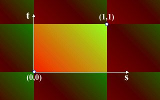

| Ligeramente Ondeado, Con la Parte Inferior Plana |
Hemos aprendido mucho acerca de materiales avanzados, con colores por vértice, normales, y cómo alterar la apariencia de tus objetos ellos. Hemos visto la iluminación, y cómo crear efectos con la iluminación de tus escenarios. En todo esto, las texturas se han quedado algo atrás. No podíamos hacer mucho con ellas, y con todos eston objetos nuevos, nos hemos olvidado de las texturas. Bueno, ahora vamos a hacer algo al respecto. Este capítulo cubrirá el mapeado de texturas en gran detalle. Aprenderemos cómo transformar las texturas en tus mundos, haciéndolas realizar cosas interesantes, y tomando más control sobre su comportamiento. Lo primero que tenemos que hacer, es hacer un viaje al espacio de la textura...
Viaje al espacio de la textura
El espacio de la textura es donde tu textura vive. Es un mundo bidimensional,
cubierto por tu textura, que se repite a sí misma infinitamente.
El origen es el punto inferior izquierda de tu textura, y el punto (1,1)
es la parte superior derecha. Esto es independiente de si tu textura mide
320x200, 640x480, 1000x20, cualquiera que sean sus tamaños o proporciones,
la esquina superior derecha será siempre (1,1) en el espacio de
la textura. De ahora en adelante, me referiré a la textura que va
desde (0,0) a (1,1) como la copia central de tu textura. El eje X en el
espacio normal se vuelve el eje S y el eje Y se vuelve el eje T. Todo esto
se muestra en el diagrama inferior, el centro de un mundo de texturas infinitas.

De ahora en adelante, quiero que pienses en términos de coordenadas de textura (texture coordinates), en vez de texturas. La coordenada de textura (1,1) está en la esquina superior derecha de la copia central de tu textura, y (1.5,0.5) está en el medio de la textura que está a la derecha de la copia central.
Bueno, ahora que eres prácticamente un nativo del mundo bidimensional que es el espacio de la textura, podremos manipular este espacio hasta sus límites. Vamos a trasladarlo, rotarlo, escalarlo, y manipularlo de distintas maneras. Este mundo nos da el poder de la textura en cualquier objeto que queramos y de la manera en que queramos. Genial.
Transformaciones de Texturas
¿Recuerdas el nodo Appearance? Bueno, cuando lo vimos por primera vez, hay algo que no te conté. ¿Recuerdas que puede contener los nodos Material, ImageTexture y MovieTexture? Bueno, puedes tener también un nodo TextureTransform en su campo textureTransform. Eso es lo que voy a cubrir ahora. La sintaxis de un TextureTransform es como sigue:
TextureTransform {
exposedField SFVec2f center 0 0
exposedField SFFloat rotation 0
exposedField SFVec2f scale 1 1
exposedField SFVec2f translation 0 0
}Fíjate en que los campos son los equivalentes bidimensionales de los campos habituales del nodo Transform. El campo center especifica el punto central usado para la rotación y la escala, en coordenadas de textura. El campo rotation especifica un ángulo de rotación sobre ese centro. El campo scale es un par de valores, especificando factores de escala relativos a ese centro en las direcciones S y T. Finalmente, translation contiene un par de valores especificando una traslación bidimensional en las direcciones S y T.
Solo hay algo realmente importante que hay que recordar con respecto a TextureTransform. Opera sobre coordenadas de textura, no sobre la textura misma. por ejemplo, quizá esperarías que una escala de 2 2 haga a una textura el doble de su tamaño, pero realmente transformará la coordenada (0.5 ,0.5) a (1,1) y (1,1) a (2,2). Esto tiene el efecto de encogimiento de la textura en ambas direcciones. En tanto que es lo contrario a lo que tú esperarías, esto no es un problema mientras lo recuerdes bien. Este es también el caso de las rotaciones y las traslaciones. Lo que hagas en las coordenadas tendrá el efecto contrario sobre la textura. Echa un ojo a este ejemplo, para unos ejemplos de transformaciones de texturas. Puedes también mirar el código.
En el ejemplo, la caja del centro posee su textura original sin modificaciones. En la izquierda, la textura ha sido escalada en 5 en ambas direcciones y rotada en 0.78 radianes. A la derecha, la textura ha sido trasladada por 0.5 en ambas direcciones. Como puedes ver, estas transformaciones tienen el efecto contrario a lo que podrías esperar.
Coordenadas de la Textura
Los objetos avanzados, al igual que tienen un campo color y normal , tienen otro llamado texCoord. Esto puede contener un nodo TextureCoordinate.
TextureCoordinate {
exposedField MFVec2f point []
}
Esta es simplemente una lista de coordenadas en el espacio de la textura,
que son usadas en campo texCoordIndex del IFS (IndexedFaceSet).
Si no especificas valores para texCoordIndex las coordenadas
de textura son mapeadas a las coordenadas del IFS en orden. Si lo haces,
puedes disponer de cualquier parte de la imagen en cualquier parte del
objeto. Por ejemplo, en el dibujo de abajo, el cuadrado que representa
el 6 está colocado en una cara del cubo.
Para variar, voy a escribir un gran fragmento de código. Lo explicaré luego. Échale un ojo...
Shape {
appearance Appearance {
texture ImageTexture {
url "d6.jpg"
}
}
geometry IndexedFaceSet {
coord DEF COORD Coordinate {
point [ 1 -1 -1, -1 -1 -1, -1 -1 1, 1 -1 1, 1 1 -1, -1 1 -1, -1 1 1, 1 1 1 ]
}
coordIndex [3 2 1 0 -1
0 1 5 4 -1
1 2 6 5 -1
2 3 7 6 -1
3 0 4 7 -1
4 5 6 7 -1
]
texCoord DEF TEXCOORD TextureCoordinate {
point [ 0.25 0, 0.5 0,
0 0.33, 0.25 0.33, 0.5 0.33, 0.75 0.33, 1 0.33,
0 0.67, 0.25 0.67, 0.5 0.67, 0.75 0.67, 1 0.67,
0.25 1, 0.5 1
]
}
texCoordIndex [5 6 11 10 -1
13 12 8 9 -1
7 2 3 8 -1
0 1 4 3 -1
5 10 9 4 -1
9 8 3 4 -1
]
}
}Vale, entonces. El IndexedFaceSet es simplemente un cubo, de dos metros de largo por cada lado. Esto influencia en los campos coordinate y coordIndex. Si te imaginas la parte inferior izquierda de la textura (0,0) y la superior derecha (1,1), puedes ver qué puntos en TextureCoordinate corresponden a las esquinas del cubo en las que deben de caer. Fíjate en que las coordenadas entran en este campo desde abajo de la imagen hacia arriba, y de izquierda a derecha. Esto no es importante, es simplemente la manera en que lo he hecho aquí. Entonces, en el campo texCoordIndex, colocamos las coordenadas de la textura en los vértices de los objetos. Los números en este campo se corresponden con los de las coordenadas de la textura definidas en el campo texCoord. Están ordenadas igual que en el campo coordIndex. Este campo tiene el mismo formato, con un -1 entre cada cara. Puedes ver cómo queda finalmente en este ejemplo en 3D con su código asociado.
De vuelta a la Tierra
Bueno, eso fue todo por este capítulo. En el siguiente, cubriremos el nodo NavigationInfo, que usaremos para configurar cómo el usuario ve tu mundo.